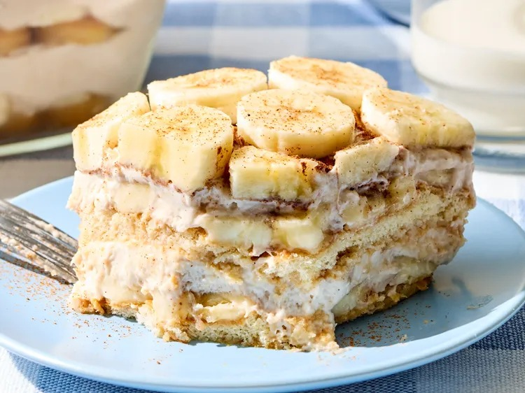

This banana bread tiramisu is in a league of its own:los of cinnamon, fresh banana, and a creamy banana-flavored masscarpone layered over ladyfingers. While there might not be coffee in this tiramisu, it eats the same way and tastes just like banana bread!

Prepare time: 30 mins Cook time: 3 mins Chill time: 8 hrs Total time: 8 hrs 30 mins Serving time: 10 minsGather all ingredients
Prepare the cinnamon Milk: combine milk, sugar, and cinnamon in a jar; shake until sugar has dissolved, about 1 minute. Add rum, if using and shake one more to combine. Set aside.
Preapre the Banana Mascarpone:combine banana and sugar in the bowl of a stand mixer fitted with a whisk attachment. Beat on medium-high speed until smooth, about 1 minute. Add cream and beat on high speed until stiff peaks from, about 2 minutes. Add mascarproneand vanilla extract; beat on medium speed until soft and billowy, about 2o seconds. Cover and refrigerate until ready to use.
When ready to assemble, working with 1 ladyfinger at a time, dip half of the ladyfingerinto the spiced milk, letting it sit in milk about 2 seconds total. Transfer to an 8x8-inch baking dish and arrange ladyfingers in a single layer, trimming ladyfingers as needed to fit neatly
Top ladyfingers with 2 of the sliced banana in an even layer.
Top banana with half mascarprone(about a scant 2 cups), and using a flexible or offset spatula, spread into an even layer. Repeat with the ladyfingers, 2 of the sliced bananas, and banana mascarprone.
Stir together cinnamonand nutmeg in a small bowl;spoon into a fine mesh sieve. Dust top with cinnamon mixture. Loosely cover with plastic wrap and refrigerate for at least 8 hours or up to3 days. When ready to serve, top with remaining sliced banana. Cut into squares and serve.